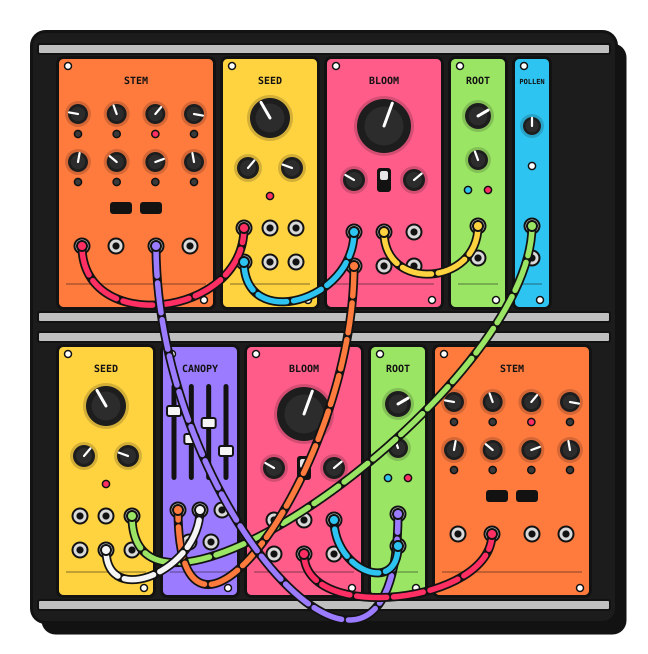
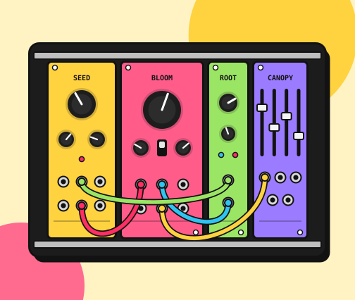

Seed Oscillator
A warm analog VCO with sine, triangle and saw out at once. Tracks eight octaves.
10 HP · €249
Hand-built in small batches
Bright, well-labelled Eurorack modules that make sense the first time you patch them, and people who help you choose.

Each one does one job well and labels every jack. Start with three, and add the rest when you get curious.
A warm analog VCO with sine, triangle and saw out at once. Tracks eight octaves.
10 HP · €249
Low-, band- and high-pass with a resonance that sings instead of screams.
12 HP · €229
Slow movement for everything else: from glacial sweeps to audio-rate wobble.
6 HP · €139
White and pink noise for hi-hats, wind, surf and happy accidents.
4 HP · €89
Four channels with sliders you can play, plus a headphone-ready output.
8 HP · €159
Eight steps, a knob for each. The fastest way from a drone to a melody.
16 HP · €329

Not sure where to start?
Describe your music, the gear you already have and a rough budget. We'll suggest three to five modules that work together, with room to grow.
A synth nerd or our AI Stand-in replies in seconds.Powered case, modules and cables, tested together before they ship.
42 HP · 1 row
Seed, Bloom, Root and Canopy. Drones, basslines and your first hundred patches.
€890
84 HP · 1 row
Everything in Sprout, plus Stem, Pollen and a second Seed. Melodies that move.
€1,690
104 HP · 2 rows
The full family, doubled where it counts. A complete voice for the studio or the stage.
€2,480
How it works
Some questions need more than a button: a bit of explanation, a picture, a place to type. <stand-card> wraps your own markup in a chat invitation. Add spotlight and it steps forward at the moment the visitor scrolls past it.
This page also hides Stand's floating button, so the cards speak for themselves:
<script>addEventListener('DOMContentLoaded', () => window.StandChat?.initiallyHideChatButton());</script>data-stand-id="demo", Stand Chat's shared demo site, which works on any domain. Its demo Stand-in follows the page's greeting and prompt, but won't speak for the made-up business. With your own Site ID, your own Stand-ins answer.<section hidden data-stand-reveal>
<stand-card
spotlight
identity="avatar name title"
theme="horizontal"
greeting="Tell me about the music you make, and I'll sketch a first rack that fits it."
prompt="The visitor is new to modular. Catalog: Seed VCO €249 (10 HP), Bloom filter €229 (12 HP)… Suggest three to five modules for their music and budget."
dismiss-label="Keep browsing"
analytics-id="first-rack">
<img slot="media" src="rack.svg" alt="">
<h2>Tell us what you play. We'll sketch your first rack.</h2>
<p>Describe your music, the gear you already have and a rough budget.</p>
<textarea data-stand-visitor-message rows="3" aria-label="What music do you make?"></textarea>
<button slot="actions" type="button" data-stand-action>Sketch my rack</button>
<span slot="footer">A synth nerd or our AI Stand-in replies in seconds.</span>
</stand-card>
</section>data-stand-action goes on exactly one button, or on the card itself to make the whole card clickable.data-stand-visitor-message marks the field whose text is sent as the visitor's first message. If it's empty, the chat simply opens.identity="avatar name title" adds a header showing who will answer. For an AI Stand-in it also shows an AI badge.spotlight centers the card over a blurred page once, as it crosses the middle of the screen. Dismissing or using it is remembered per card and page in that browser. dismiss-label renames the generated Cancel button.greeting and prompt work as on <stand-button>: an opening line from your side, and private context for whoever answers.media, actions, footer, and the default slot for everything else. Themes: outlined, elevated, horizontal, cover-media, stretch-media, divided-footer.Your own content inside the card is ordinary light DOM, so style it like any other markup. The card's own surfaces are exposed as parts.
.advisor stand-card::part(card) {
grid-template-columns: minmax(0, 1fr) minmax(0, 1.1fr);
border: 3px solid #121212;
border-radius: 22px;
box-shadow: 10px 10px 0 #121212;
}
.advisor stand-card::part(header-suffix) { background: #FF5C8A; }
.advisor stand-card [data-stand-action] {
border: 3px solid #121212;
background: #FFD23F;
color: #121212;
}hidden in one place. Either on the card, or on one wrapper marked data-stand-reveal (as here) so the surrounding section appears with it.type="button" on the action, so it can't submit a surrounding form before Stand loads.The spotlight shows once per browser. To see it again, . That button is a demo helper, not part of the example.
npx degit standchat/examples/stand-card my-stand-card